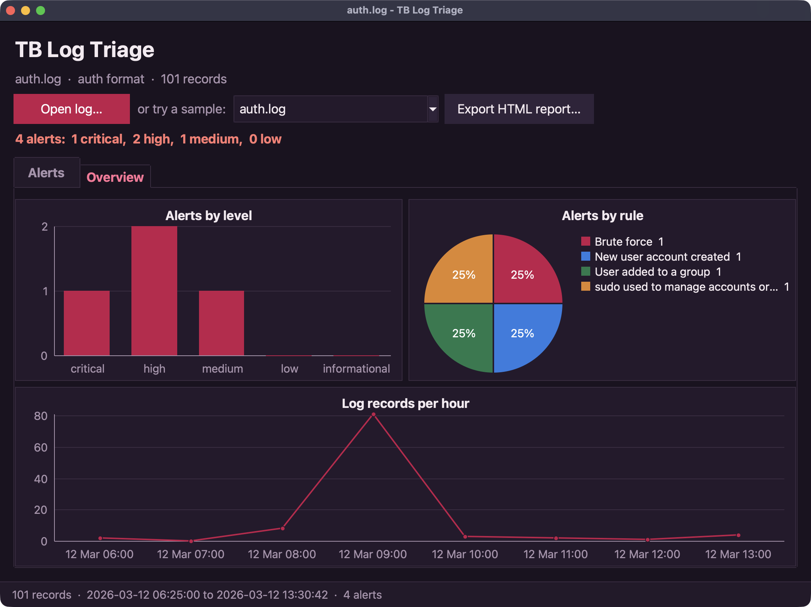

Triage an SSH brute force with TB
Someone has been guessing passwords on a Linux server. Using the sample auth.log that comes with TB, you'll find the attacker, see which accounts they tried, and answer the question that matters: did they get in? Every step runs here in your browser.
1.Look at the raw log
Start by reading a few lines. fs.lines gives back a list, one item per line.
import fs
let lines = fs.lines("apps/data/auth.log")
say(len(lines), "lines")
for line in lines.slice(20, 26) {
say(line)
}2.Turn lines into records
Lines are hard to count. logs.read parses each one into a map with fields like user, ip, action and success.
import logs
let records = logs.read("apps/data/auth.log", "auth")
let failed = records.filter(fn(r) { return r.get("action") == "failed_login" })
say(failed[0])3.Count failures by address
logs.top counts how often each value of a field appears. One address stands out.
import logs
import report
let records = logs.read("apps/data/auth.log", "auth")
let failed = records.filter(fn(r) { return r.get("action") == "failed_login" })
say(report.table(logs.top(failed, "ip", 5)))
say(report.table(logs.top(failed, "user", 5)))4.Let a rule find it
Counting by hand works once. A detection rule works every time. detect.brute_force looks for five or more failures from one source within ten minutes, and checks what happened next.
import logs
import detect
let records = logs.read("apps/data/auth.log", "auth")
for alert in detect.brute_force(records) {
say(f"{alert.level}: {alert.rule} from {alert.by}")
say(f" {alert.count} failures between {alert.first_when} and {alert.last_when}")
say(f" accounts tried: {alert.users}")
say(f" logged in afterwards: {alert.success_after} as {alert.success_user}")
}5.What did they do once inside?
The attacker guessed the deploy account's password. Follow that account from the moment it logged in.
import logs
let records = logs.read("apps/data/auth.log", "auth")
let start = records.filter(fn(r) {
return r.get("user") == "deploy" and r.get("success") == true
}).first().time
for r in records {
if r.time >= start and (r.get("user") == "deploy" or r.get("target_user") == "deploy") {
say(r.when, r.action, r.message)
}
}A new account, a sudo session: this is an incident, not just noise.
6.Write it up
Alerts are maps, so report can turn them into a table for a ticket, Markdown, CSV or a full HTML page.
import logs
import detect
import report
let records = logs.read("apps/data/auth.log", "auth")
let alerts = detect.brute_force(records)
say(report.markdown(alerts, ["level", "rule", "by", "count", "success_user", "success_when"]))Where next
The Brute-force hunter app does all of this for Linux and Windows logs from the command line, and the Log triage desktop app shows alerts in a window:
